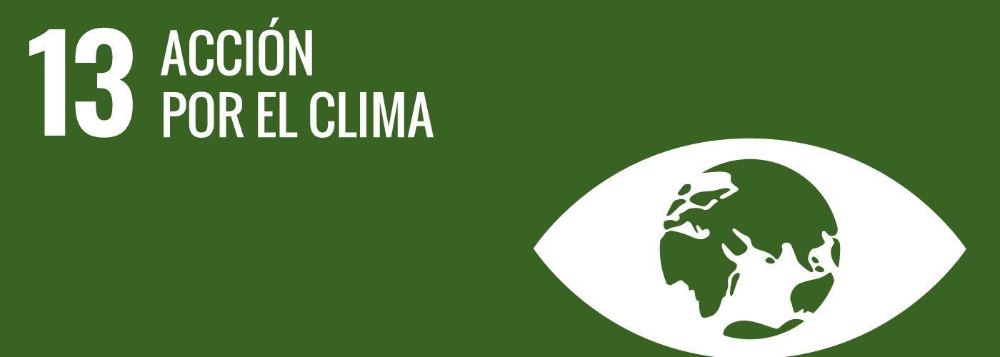
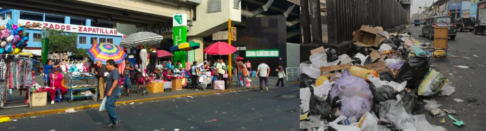
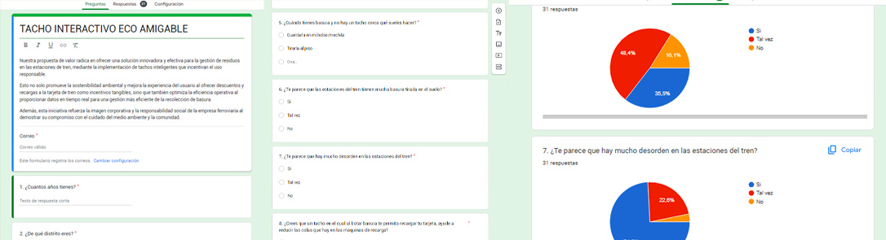
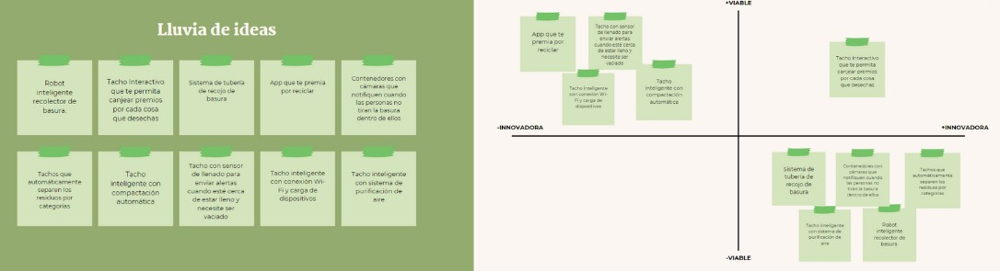
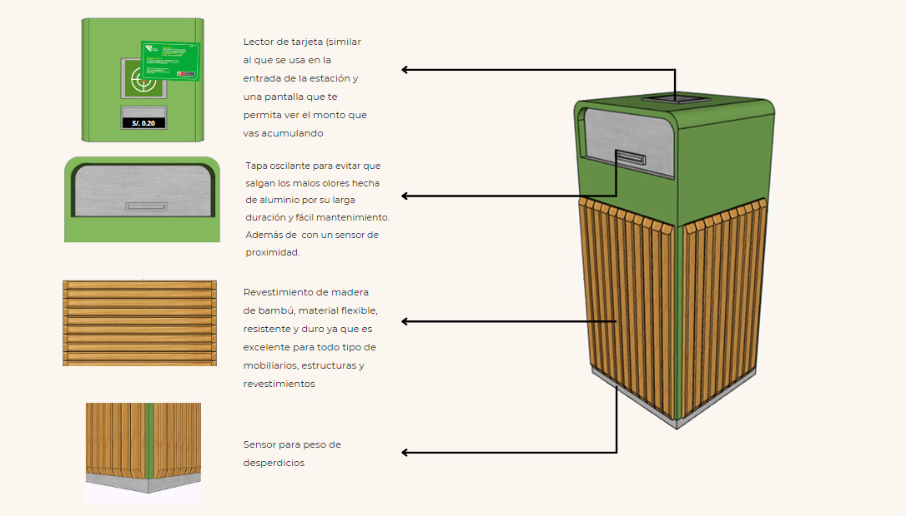
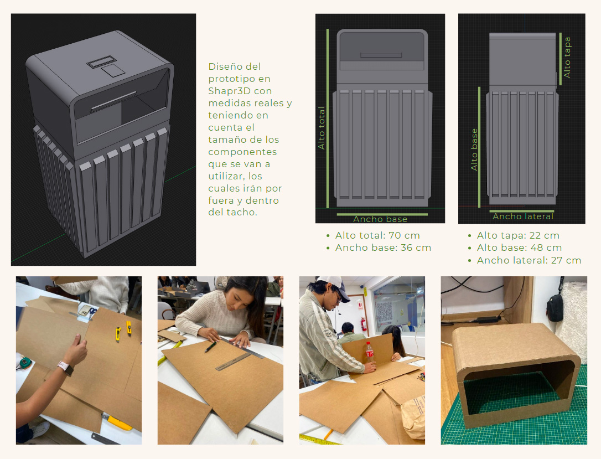
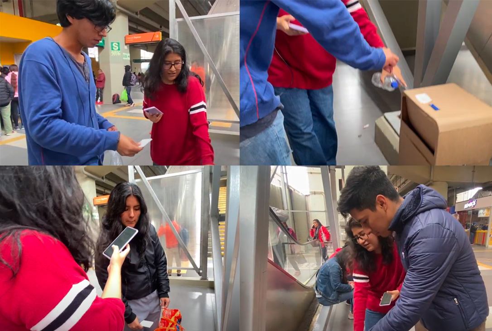
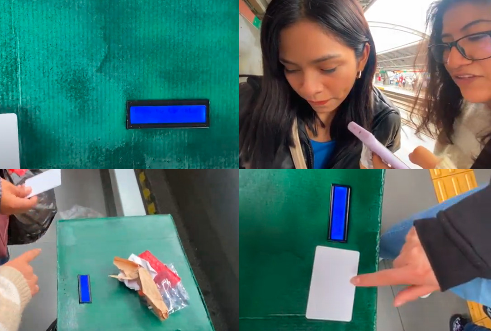

TACHO INTERACTIVO ECO-AMIGABLE COMO SOLUCIÓN A LA CONTAMINACIÓN EN LAS ESTACION DEL TREN DE GAMARRA
En Perú, el 10% de los residuos que se producen son plásticos. De estos, no llegamos a reciclar ni el 1% (cHANG , m., viceministro de Gestión Ambiental, 18 de mayo de 2018).

La contaminación es un problema que afecta a diversas áreas del país, por lo cual se deberían buscar diferentes soluciones que ayuden a disminuir su efecto negativo en el medio ambiente. La línea 1 de Lima ya ayuda con esta problemática, pues reduce cada año y medio cerca 44 mil toneladas de dióxido de carbono. por eso que para ayudar con esta responsabilidad , se propone el uso de tachos inteligentes que fomenten el reciclaje al darte una incentivo por ello( saldo para tu tarjeta del tren) y así poder reducir la contaminación en la estación de Gamarra.
ODS 13 ACCIÓN POR EL CLIMA
El ODS 13 pretende introducir el cambio climático como cuestión primordial en las políticas, estrategias y planes de países, empresas y sociedad civil, mejorando la respuesta a los problemas que genera, e impulsando la educación y sensibilización de toda la población en relación al fenómeno.
- Fortalecer la resiliencia y la capacidad de adaptación a los riesgos relacionados con el clima y los desastres naturales en todos los países.
- Incorporar medidas relativas al cambio climático en las políticas, estrategias y planes nacionales.
- Mejorar la educación, la sensibilización y la capacidad humana e institucional respecto de la mitigación del cambio climático, la adaptación a él, la reducción de sus efectos y la alerta temprana.
- Cumplir el compromiso de los países desarrollados que son partes en la Convención Marco de las Naciones Unidas sobre el Cambio Climático de lograr para el año 2020 el objetivo de movilizar conjuntamente USD 100.000 millones anuales procedentes de todas las fuentes a fin de atender las necesidades de los países en desarrollo respecto de la adopción de medidas concretas de mitigación y la transparencia de su aplicación, y poner en pleno funcionamiento el Fondo Verde para el Clima capitalizándolo lo antes posible.
- Promover mecanismos para aumentar la capacidad para la planificación y gestión eficaces en relación con el cambio climático en los países menos adelantados y los pequeños Estados insulares en desarrollo, haciendo particular hincapié en las mujeres, los jóvenes y las comunidades locales y marginadas.
METAS DEL OBJETIVO
ETAPA DE INVESTIGACIÓN
Semana 1 y 2 : Busqueda de la problemática y evidencias
Nos reunimos en grupo y fuimos intercambiando diferentes ideas para la problemática hasta que nos decidimos por la contaminación en las estaciones del tren de la Linea 1 de Lima y finalmente terminamos cerrando la idea en solo la estación del tren de Gamarra. Ya que en el proceso de la busqueda de evidencia que pruebe que existe la problemática nos dimos cuenta que en esta estación es la que esta más afectada por el problema de la contaminación.
Semana 3 y 4 : Proceso de encuestas para hallar a nuestro público objetivo
Hicimos 3 encuestas a lo largo de dos semanas. En la que buscamos encontrar distintos datos como la edad, el distrito, cantidad de veces en las cuales usaban el tren,opiniones de la propuesta. Estas fueron algunas de las preguntas más importantes y que luego se usaron para las entrevistas:
- ¿Con qué frecuencia utilizas el servicio de tren?
- ¿Por que motivos sueles usarlo?
- ¿Cuándo tienes basura y no hay un tacho cerca qué sueles hacer?
- App que te premia por reciclar.
- ¿Te parece que hay mucha basura en la estación del tren de Gamarra?
- ¿Qué opinas sobre la idea de implementar estos tachos inteligentes que te permiten recargar tu tarjeta del tren?
- ¿Crees que esta iniciativa podría ayudar a reducir la cantidad de basura tirada en el suelo?
- ¿Qué sugerencias tendrías para mejorar la implementación de esta iniciativa?
El estudio revela una mayoría que utiliza el tren ocasionalmente y apoya la idea de tachos inteligentes con incentivos. Todos estarían motivados por descuentos/recargas. La mayoría cree que reduciría la basura y desea su expansión. La disposición a compartir información es alta. La mitad desea actualizaciones frecuentes sobre la iniciativa. Los entrevistados sugieren diversos incentivos para promover el uso responsable de los tachos de basura, como descuentos, premios y reconocimiento social. También proponen mejoras en el diseño, materiales sostenibles y promoción a través de redes sociales. Las motivaciones para utilizar el tacho inteligente incluyen el deseo de mantener la limpieza, obtener beneficios personales y contribuir al medio ambiente.
ETAPA DE IDEACIÓN
SEMANA 3: LLUVIA DE IDEAS
- Robot inteligente recolector de basura.
- Tacho Interactivo que te permita canjear premios por cada cosa que desechas.
- Sistema de tubería de recojo de basura.
- App que te premia por reciclar.
- Contenedores con cámaras que notifiquen cuando las personas no tiran la basura dentro de ellos
- Tachos que automáticamente separen los residuos por categorías.
- Tacho inteligente con compactación automática.
- Tacho con sensor de llenado para enviar alertas cuando esté cerca de estar lleno y necesite ser vaciado.
- Tacho inteligente con conexión Wi-Fi y carga de dispositivos.
- Tacho inteligente con sistema de purificación de aire.
Finalmente se eligio la idea del tacho interactivo que como premio te permite recargar el saldo de tu tarjeta del tren y se paso a realizar los diferentes cuadros que acompañan esta etap del TLS THINKING.

ETAPA DE DESARROLLO
SEMANA 4 Y 5: PROTOTIPO DE BAJA FIDELIDAD
Automatizará aún más la manera en cómo depositar la basura en su lugar. En este podrás depositar diferentes cantidades de basura que te ayudarán a recibir una compensación económica, la cual será agregada a tu tarjeta del tren. En este prototipo de baja fidelidad veremos cuestiones más estéticas del producto.
Materiales que se usaran para su creación
- Programa de modelado 3D.
- Canvas.
- Laptos
¿Qué se probará con el prototipo?
- El diseño que tendrá el tacho, si es agradable para el usuario.
- El color.
- El tipo de material que iría en cada lugar.
Objetivos del prototipo
- Que el usuario pueda tener una guía visual del producto y de las partes de este para así entender mejor su funcionalidad.
- Poder implementar futuras mejoras el aspecto estético del tacho.
- Cartón.
- Cinta.
- Componentes electrónicos.
- Spray verde para pintar.
- Apus.
- Silicona caliente.
- Cuchillas para cortar.
- Reglas.
- Laptop.
- Si los sensores funcionan correctamente.
- El tiempo en la que tarda en hacer las distintas tareas el usuario.
- Si le parece una propuesta atractiva.
- Que el usuario pueda experimentar a tiempo real con el prototipo para ver la funcionalidad.
- Recibir feedback del usuario para posibles mejoras.
- Al igual que la validación anterior, a todos los entrevistados les pareció que el proyecto era innovador e interesante. Consideraron útiles las nuevas funciones que se agregaron y sugirieron que, en el caso de la puerta del tacho, esta se podría abrir más y que el interfaz debería responder de forma más rápida.
- De los 10 participantes entrevistados, todos encontraron funcional y útil el mensaje "Pasa tu tarjeta" antes de realizar la operación.
- A los 10 participantes sí les apareció el mensaje "tacho lleno" en la pantalla cuando el sensor ultrasónico detectaba un objeto a menos de 5 cm.
- Al preguntarles del 1 al 10 qué tan fácil de usar era el tacho, 6 respondieron que 10 y 4 que 9.
- Al preguntarles del 1 al 10 qué tan interesante le parece el proyecto, 7 respondieron que 10 y 3 que 9.
- De los 10 participantes, 5 dicen que el tacho debería estar dentro de la estación, 4 que debería estar dentro y fuera y 1 que debería estar fuera. Hubo 1 que no quiso responder.
SEMANA 6 A LA 11: PROTOTIPO DE ALTA FIDELIDAD
Se pasó a armar en cartón nuestro prototipo de alta fidelidad a escala y guiándonos de las medidas que habíamos definido en el modelado 3D que se realizó.
Materiales que se usaran para su creación
¿Qué se probará con el prototipo?
Objetivos del prototipo
ETAPA DE TRANSFERIR
SEMANA 12: PRIMERA VALIDACIÓN
La primera validación de nuestro proyecto de tacho interactivo en la Estación de Gamarra arrojó resultados alentadores, con un reconocimiento exitoso de la tarjeta por parte de todos los participantes y una alta calificación de facilidad de uso e interés en el proyecto. Sin embargo, se identificaron áreas de mejora significativas, especialmente con respecto al sensor infrarrojo y el servomotor. La implementación de soluciones como ampliar el rango del sensor y mejorar la estabilidad del sistema eléctrico son pasos cruciales para garantizar un funcionamiento óptimo.
SEMANA 14: SEGUNDA VALIDACIÓN
Mejoras que se realizaron en esta validación: color, que muestre un aviso cuando este lleno y se bloquee el sistema, uso de dos sensores infrarojos para un mayor rango a la hora de detectar las botellas.
Análisis de Datos
Cualitativo
Cuantitativo